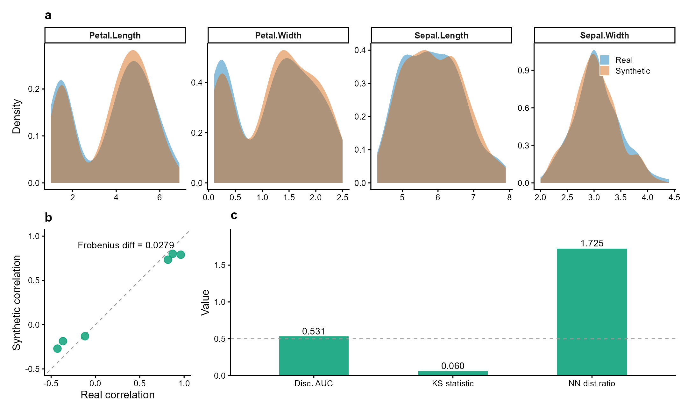

Overview
syntheticdata generates synthetic clinical datasets that preserve statistical properties while reducing re-identification risk. Useful for privacy-aware data sharing in multi-site clinical research.
- Generation: Gaussian copula, bootstrap with noise, Laplace noise perturbation
- Validation: distributional fidelity (KS), correlation preservation, discriminative accuracy
- Privacy assessment: nearest-neighbor distance ratio, membership inference, attribute disclosure risk
-
Benchmarking:
compare_methods()runs all methods on the same data;model_fidelity()measures train-on-synthetic, test-on-real predictive performance
Unlike synthpop (survey data) or simPop (census microsimulation), syntheticdata integrates generation with privacy-utility validation in a single lightweight framework oriented toward clinical research.

Figure 1 | Synthetic data preserves statistical properties while ensuring privacy. Fisher’s iris dataset (n = 150, 4 numeric variables) synthesized via Gaussian copula. (a) Marginal density overlays: synthetic (orange) closely matches real (blue) across all variables (mean KS = 0.06). (b) Pairwise correlation preservation (Frobenius diff = 0.028). (c) Validation metrics: discriminative AUC = 0.53 (indistinguishable from random), nearest-neighbor distance ratio = 1.73 (no privacy leakage). Data: Fisher (1936) Ann. Eugenics 7:179.
Why syntheticdata?
| Package | Focus | syntheticdata difference |
|---|---|---|
synthpop |
Survey/census data (CART-based) | syntheticdata targets clinical data with Gaussian copula preserving correlation structure |
simPop |
Population microsimulation | syntheticdata integrates privacy metrics (NN ratio, membership inference) |
simstudy |
Simulation for trials | syntheticdata generates from real data, not from specified distributions |
The gap: no CRAN package combines generation + privacy assessment + downstream model fidelity testing in one workflow. Existing tools either generate without validating, or validate without privacy-aware metrics.
# Complete workflow in 3 lines
syn <- synthesize(clinical_data, method = "parametric")
privacy_risk(syn, sensitive_cols = c("diagnosis", "age"))
model_fidelity(syn, outcome = "readmission")Installation
# Stable release from CRAN
install.packages("syntheticdata")
# Development version from GitHub
# devtools::install_github("CuiweiG/syntheticdata")Quick start
library(syntheticdata)
# Synthesize from real clinical data
syn <- synthesize(iris, method = "parametric", seed = 42)
syn
# Validate utility and privacy
validate_synthetic(syn)Functions
| Function | Description |
|---|---|
synthesize() |
Generate synthetic data (parametric / bootstrap / noise) |
validate_synthetic() |
Compute utility and privacy metrics (KS, AUC, NN ratio) |
compare_methods() |
Benchmark all 3 methods on the same dataset |
privacy_risk() |
Assess re-identification risk (NN ratio, membership inference, attribute disclosure) |
model_fidelity() |
Train-on-synthetic, test-on-real predictive model comparison |
Key references
- Jordon J et al. (2022). Synthetic Data – what, why and how? arXiv preprint arXiv:2205.03257. doi:10.48550/arXiv.2205.03257
- Snoke J et al. (2018). General and specific utility measures for synthetic data. JRSS-A 181:663. doi:10.1111/rssa.12358